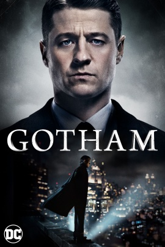
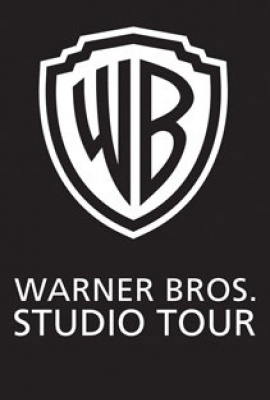

MOVIES! - Chris Hemsworth (Thor) and Oscar nominee Michael Shannon (Nocturnal Animals, The Shape of Water) star in 12 Strong, a powerful new war drama from Alcon Entertainment, Black Label Media and Jerry Bruckheimer Films that tells the declassified true story of the first American soldiers sent into Afghanistan after 9/11.
TV SHOWS! - The origin story continues on the fourth season of Gotham, which will witness the emergence of the criminal landscape for which Gotham City is best known, with Jim Gordon (Ben McKenzie) and Harvey Bullock (Donal Logue) at the forefront of the fight against the most depraved and unhinged villains. While Gotham City fights for normalcy, a new hero will rise, as Bruce Wayne (David Mazouz) begins to assume responsibility for the city’s well-being.
GAMES! - In Middle-earth: Shadow of War, players wield a new Ring of Power and confront the deadliest of enemies, including Sauron and his Nazgul, in a monumental battle for Middle-earth. The open-world action-adventure game is brought to life through the expansion of the award-winning Nemesis System. The robust personalization from the first game is now applied to the entire world where the environments and characters are all shaped by player actions and decisions, creating a personal world unique to every gameplay experience.
STUDIO TOURS! - Warner Bros. Studio Tour Hollywood brings you closer than ever to the entertainment you know and love. Get ready to experience one of the busiest movie studios in LA as you explore our iconic backlots, DC Universe: The Exhibit, and original Batmobiles. Plus, you’ll view one of our many soundstages where today’s hottest TV shows and movies are made. With actual filming happening all around you, no two Warner Bros. tours are ever alike.
SHOP! - The Warner Bros. store has a wide assortment of items for sale that include collectibles, clothing, movies, tv shows, and much more. Please visit our store soon!